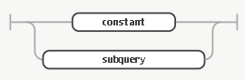
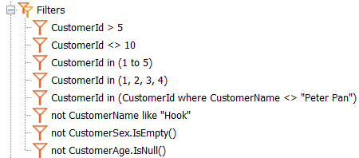

Query object: Filters
Diagrams are used here to show the filters that can be applied in a query through the Query object's Filters node, as illustrated by the example below: FiltersValid filter: The following diagram represents a valid entry for the Filters node. In other words: a valid filter will be composed of: Filter: logical expression: logical operator: Based on the previous initial definition and the following detail, possible filters values are: CustomerId = 1 CustomerId > 5 CustomerId <> 10 CustomerId in (1 to 5) not CustomerId in (1 to 5) CustomerId in (1,2,5,17,30) not CustomerId in (1,2,5,17,30) CustomerName like "Peter Pan" not CustomerName like "Peter Pan" CustomerId in (CustomerId where (ProductId = 10)) not CustomerId in (CustomerId where (ProductId = 10)) Sum( InvoiceAmount ) > 10000 not Count( CustomerId ) in (4, 500, 1000) Average( InvoiceAmount) by InvoiceDate > 1000 ValuesValid values Examples
Date and DatetimeWhen using a Date or Datetime attribute, the filter format is #YYYY-MM-DD# for Date and #YYYY-MM-DD HH:MM:SS# for Datetime; otherwise the following error will occur: invalid date constant; ANSI format expected: YYYY-MM-DD HH:MM:SS. SubqueriesValid subqueries: They're used to specify a filter that is not a constant or a list of constant values, but in which values are drawn from the database.
ExampleSuppose we have a table that relates Supplier with Product sold. SupplierId* ProductId* We need to have a query that shows all the suppliers that sell product 5, and the amount of product that each supplier sells. To do that, we have to specify the query as follows: # Attributes SupplierName ProductDescription # Filters SupplierId in (SupplierId where ProductId = 5) Observations The subquery has to return one or more values, as applicable. If either a relational operator is used (=, >, >=, <, <=, <>), it must return a single value. E.g.: att=(subquery). It should also return a single value when it is used with the in operator and a list of values that includes the subquery as one of those values. E.g.: att in (value1, value2, subquery, value3). The list can be a list of clients 1, 2 and 3 plus the client that bought the most products (this client is obtained through a subquery). A single value is also returned when a range is established. The only case in which the subquery can return N values is when it is used with an in operator that has a single element: the subquery. It's the example that returns all the suppliers that sold product 5 and the amount of product sold by these suppliers. That is: att in (subquery). Logical OperatorsFilters made up of logical operators:logical expression: logical operator: An example of different kind of filters can be the following:  If you need to combine AND and OR will need to specify it explicitly for example link them by OR and both results are joined by AND: (filter1 or filter2, or... or filterN) and (anotherFilter1 or anotherFilter2 or ... or anotherFilterM) example: (CustomerId > 5 or CustomerId <> 10 or CustomerId in (1 to 5) or CustomerId in (CustomerId where CustomerName <> "Peter Pan")) and (not CustomerName like "Hook" or CustomerId in (1,2,3,4)) AggregationsValid Sum | Count | Average | Min | Max:
by: defined by: weighted by: arithmetic expression: Nesting is possible using Sum, Count, Average, Max and Min. Remember that the Where conditions the elements that are to be added; that is, it is applied before aggregating. For example, if you have Sum(InvoiceAmount) where InvoiceAmount > 1000 only the invoices with amount > 1000 will be added together. ConsiderationsSome differences of the Query object filters with filters specified in other GeneXus objects (procedures, web panels, data providers, etc.):
AvailabilityThis behavior is available since GeneXus 16 Upgrade 11. |


| Backlinks | |
| Multi-experience with GeneXus 17 | Category:Query object |
| Query object expressions | Toc:Reporting in GeneXus |